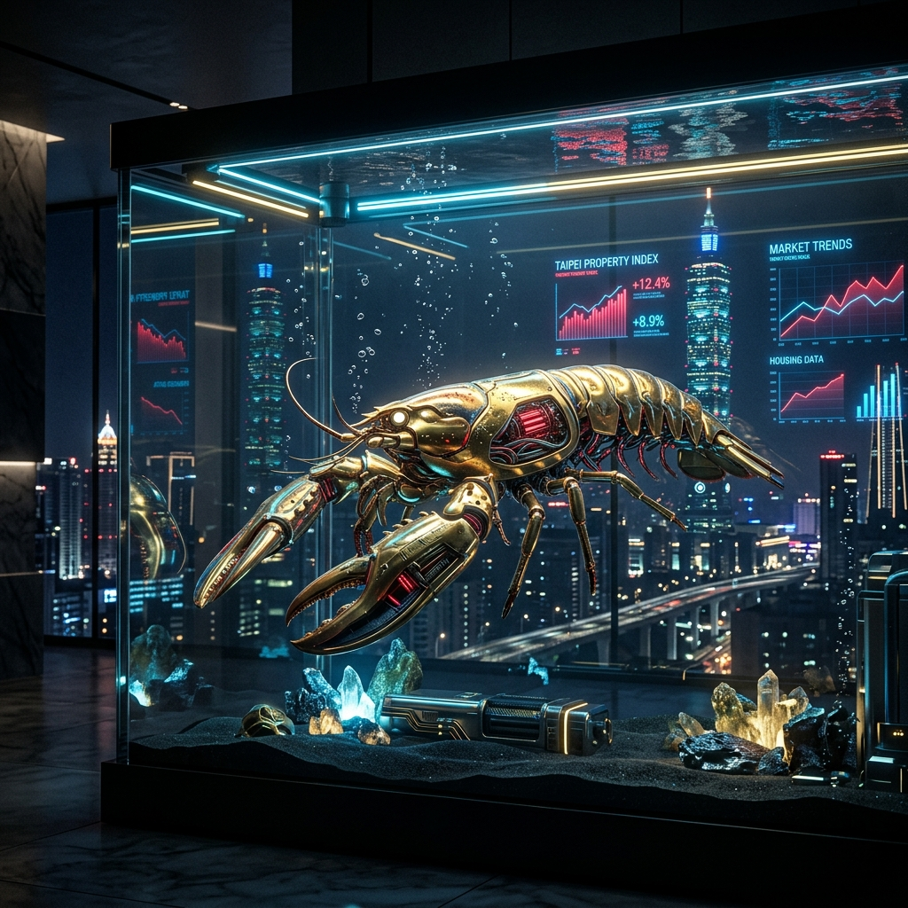

龍蝦、AI 與新青安：
正在發生的「養套殺」劇本
你以為自己是站在浪潮上的衝浪客，其實我們都只是別人魚塭裡的龍蝦。
15%
System Risk
Low
Dependency
一、 「養」：補貼戰
數位巨頭正在燃燒美金，提供你幾近免費的服務。這不是慈善，而是數位魚塭的建設。
低利門票
政府端出的 1.775% 利率與 5 年寬限期，本質上就是一種「金融補貼試用」。消弭戒心，讓你習慣高槓桿的生活。
二、 「套」：依賴陷阱
當整間公司的營運自動化都與特定 AI 綁定時，收網就開始了。限制次數、調漲費用，遷移成本高到讓你無法抽身。
流動性陷阱
交屋潮迎來的是 銀行法 72-2 的水位限縮。簽了約、付了頭款，貸款成數卻縮水。你被「鎖死」在鋼筋混凝土裡。
「所謂自由，在依賴產生的那一刻就已消失。」
三、 「殺」：生存清算
寬限期的鐘聲敲響，只需繳息的好日子結束。月付額從 2 萬噴發到 10 萬，現金流瞬間崩潰。
當你撐不住斷頭出場，資產會以低價重回資本市場，等待下一波龍蝦。這是一場精確的財富重分配。
生存指南
- 去中心化依賴：不押寶單一供應商。
- 保留現金流邊際：假設房貸增加 2 倍仍能存活。
- 掌握底層邏輯：掌握工具而非被工具掌握。